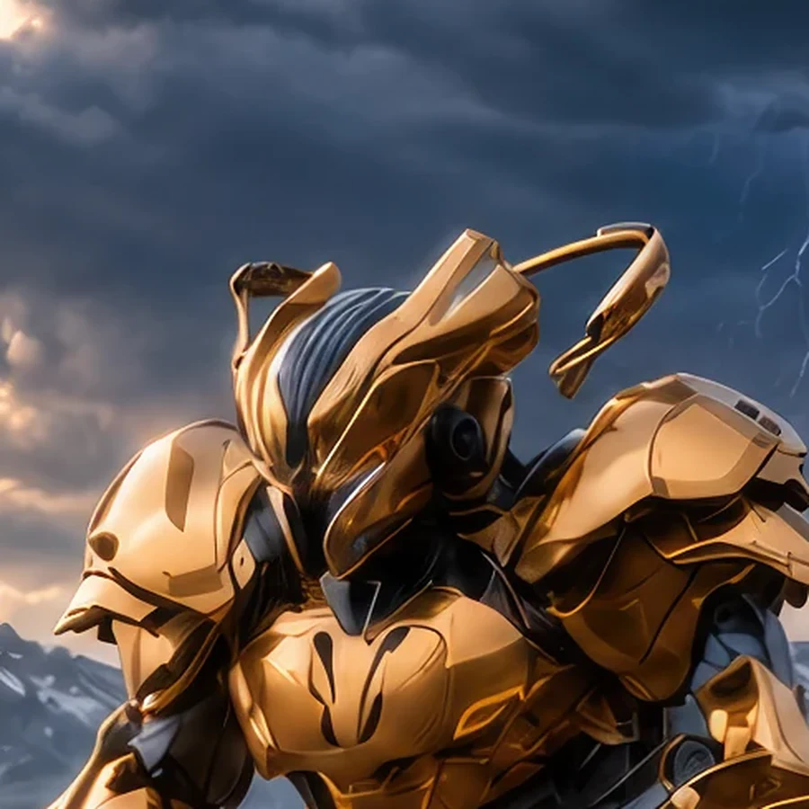
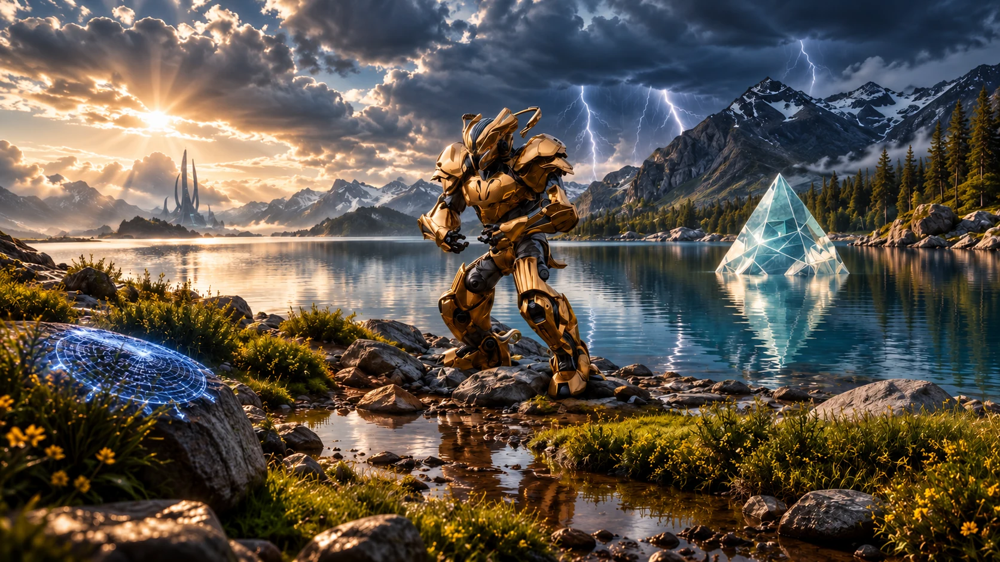
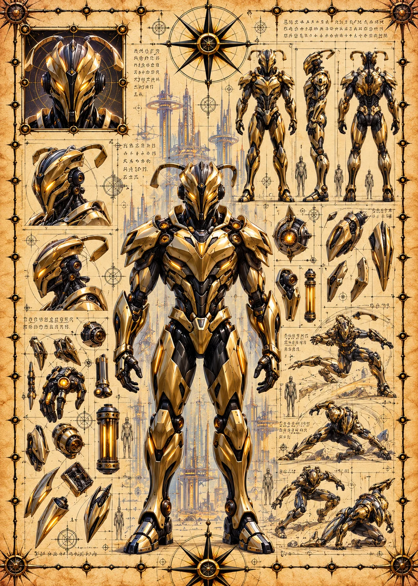

Field Observation
A translucent cyan pyramid stands among rocks to the hero's right.
 ©
©
GENEZYS ARCHIVE · EARTH 1 · Legionnaire
Tesseract Scout
Identity & combat record
Archive node 01 / 05

Archive record
Uxanor moves through folded space as easily as stepping between rooms. The Rift Skip pierces the center and hits the flanks in the same instant. The Custodians send Uxanor first, to see what waits on the other side of every door.
Combat signature
Leaps across folded space: Deals 50 pierce damage to the enemy in the middle and 60 damage to enemies on the edges.
Genezys 07:03 ™&©2026LEGIONS
Recovered visual record
Archive node 02 / 05

Full frame available // rotate device to landscape
Technical archive
Archive node 03 / 05

Classified field intelligence
Archive node 04 / 05
FIELD REPORT // STRUCTURE SIGHTING
Field Observation
A translucent cyan pyramid stands among rocks to the hero's right.
Environment
Object Analysis
Key Findings
Motion archive
Archive node 05 / 05
Motion record not yet recovered